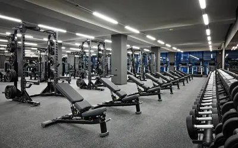
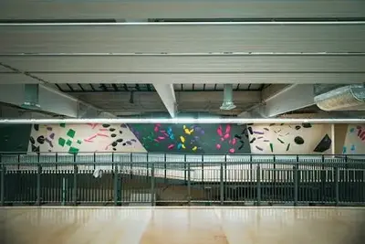

Fitko
Fitko, misto kam chodim temer kazdy den a je to muj druhy domov. Je to misto, kam se tesim i kdyz je treba patek 13 a nic se nedari.
Na tomto specifickem fitku se mi libi predevsim jeho dokonala vybava stroju, ale take lidi a obecne komunita obihajici toto fitko.

Bouldering
Chozeni na stenu je muj druhy konicek. Jelikoz rad delam nejake fyzicke aktivity, ale take rad premyslim, je pro me tento
sport zcela dokonaly. Bouldering je perfektni rovnovaha mezi fyzickym vyzitim, reseni logickych problemu a zabavy s kamarady,
se kterymi casto na stenu chodim.
